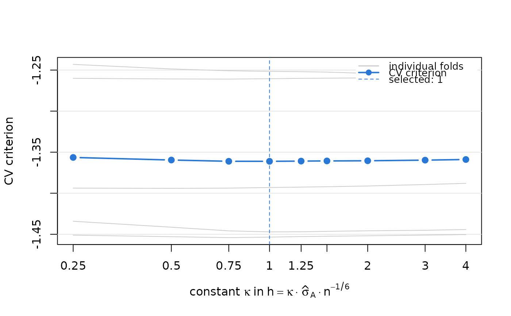

Chooses the constant \(\kappa\) in the ratio bandwidth
\(h = \kappa\,\hat\sigma_A n^{-1/6}\) by
\(F\)-fold cross-validation over subjects, using the criterion proposed in
the supplementary material of Hu et al. For a visit gap \(v\) and each
fixed age \(u\), the population minimizer over \(r\) of
\(E[Y(u - v) r^2 - 2 Y(u) r \mid dN(u) = 1]\) is the ratio
\(r(u, u - v) = f(u)/f(u - v)\). The criterion is the out-of-sample version
of this loss,
$$CV(\kappa) = \frac{1}{F}\sum_{j=1}^{F} \frac{1}{n_j} \sum_{i \in I_j}
\sum_{v} \int_{\tau_0 + v}^{\tau_1} \left[ Y_i(u - v)\{\hat r^{(-j)}(u, u - v)\}^2
- 2 Y_i(u)\, \hat r^{(-j)}(u, u - v) \right] dN_i^{(v)}(u),$$
where \(\hat r^{(-j)}\) is the ratio estimator computed without fold
\(j\), with bandwidth \(\kappa\,\hat\sigma_{A} n_{-j}^{-1/6}\), the sum
over \(v\) runs over the distinct visit gaps (a single term for equally
spaced visits), and the integral is a sum over the observed visits of the
test subjects whose preceding visit lies \(v\) earlier. The criterion
involves only the ratio estimators and is therefore free of the penalty
\(\lambda\) of the penalized estimator. Test points at which the training
ratio is undefined (possible for very small constants) are dropped; their
number is reported in the n_dropped column of table. A flat criterion
means that the data hardly discriminate between bandwidths; it is then
advisable to check the sensitivity of the conclusions to \(\kappa\).
Arguments
- Y
Numeric matrix of marker values with one row per subject and one column per scheduled visit; column 1 is the baseline measurement at study entry. Visits that were not observed (after death, dropout or end of follow-up) are
NA.- entry_age
Numeric vector of ages at study entry (\(A_i\)), one per row of
Y.- visit_gaps
Scheduled time between consecutive visits, on the same scale as
entry_age: a single number for equally spaced visits, or a vector \((v_1, \dots, v_k)\) of lengthncol(Y) - 1. Use the scheduled (rounded) gaps, not observed average gaps.- tau0
Starting age \(\tau_0\) of the trajectory (the target population consists of individuals alive at this age).
- tau1, m
End of the age interval \(\tau_1\), or the number of grid points \(m\); supply one of them. \(\tau_1 - \tau_0\) must be an integer multiple of the grid step.
- grid_step
Spacing \(\delta\) of the grid. The default is the greatest common divisor of
visit_gaps(the visit gap itself when visits are equally spaced). Use a value \(v/q\) to refine the grid for widely spaced visits (Section 5 of the paper).- candidates
Candidate values of the constant \(\kappa\). The default is the set used in the paper.
- n_folds
Number of folds \(F\).
- n_repeats
Number of independent random partitions into folds; the criterion is averaged over partitions (seeds
seed,seed + 1, ...). Use more than one partition for small samples, where a single partition adds noticeable noise.- seed
Seed for the random partition, or
NULLto use the current random number stream. The caller's random number stream is left unchanged when a seed is supplied.- sd_scope
Scale \(\hat\sigma_A\) used in the training-fold bandwidth: the standard deviation of the training subjects' entry ages (
"fold", default) or of all subjects ("full").- kernel
Kernel; see
kernel_function().
Value
An object of class "trajchain_cv" (with type = "bandwidth"), a
list with components
constantthe selected constant \(\hat\kappa\);
bandwidththe corresponding full-data bandwidth \(\hat\kappa\,\hat\sigma_A n^{-1/6}\), ready to be passed to
trajchain();tabledata frame with each candidate, its criterion, its full-data bandwidth and the average number of test points dropped because the training ratio was undefined;
cv_by_repeat,cv_foldscriterion for every partition, and for every fold of the first partition;
n_test,settingsaverage number of test points per partition, and the settings used.
References
Hu, P., Wu, Y., Zhao, Y. and Sun, Y. Nonparametric estimation of marker trajectories in the presence of death and delayed entry. Manuscript under revision at Biometrika.
See also
trajchain(), which accepts the result as its bandwidth argument;
plot.trajchain_cv() to inspect the criterion.
Examples
sim <- simulate_cohort(n = 600, seed = 3)
cvb <- cv_bandwidth(sim$Y, sim$entry_age, sim$visit_gaps, tau0 = 0, tau1 = 1)
cvb
#> <TrajChain cross-validation: bandwidth constant>
#> 5-fold CV over subjects, 1 partition(s), fold-specific training-fold scale
#> selected constant 1, i.e. h = 1 * sd(A) * n^(-1/6) = 0.1237
#>
#> constant cv bandwidth n_dropped
#> 0.25 -1.356 0.03092 0
#> 0.50 -1.360 0.06183 0
#> 0.75 -1.361 0.09275 0
#> 1.00 -1.361 0.12367 0
#> 1.25 -1.361 0.15458 0
#> 1.50 -1.361 0.18550 0
#> 2.00 -1.360 0.24734 0
#> 3.00 -1.360 0.37100 0
#> 4.00 -1.359 0.49467 0
plot(cvb)

fit <- trajchain(sim$Y, sim$entry_age, sim$visit_gaps, tau0 = 0, tau1 = 1,
bandwidth = cvb)
fit$bandwidth
#> ratio mean
#> 0.1236676 0.2338119